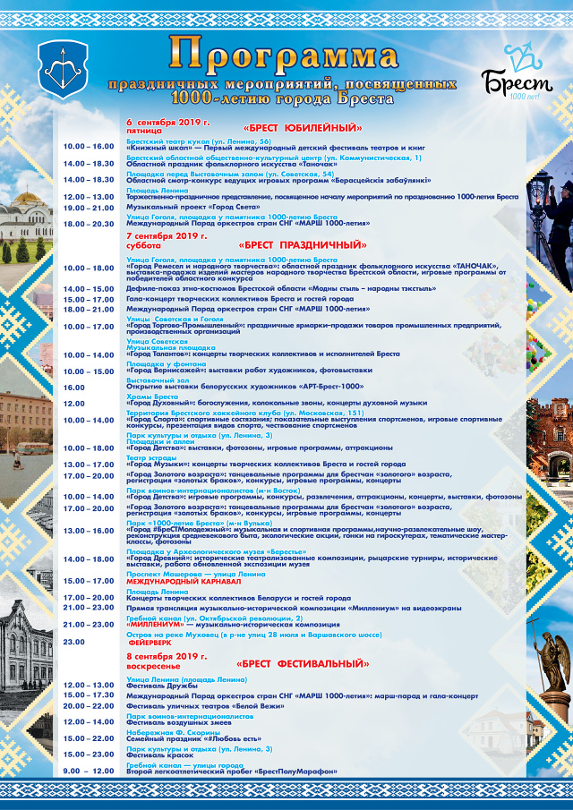

ПРОГРАММА ПРАЗДНИЧНЫХ МЕРОПРИЯТИЙ, ПОСВЯЩЕННЫХ 1000-ЛЕТИЮ БРЕСТА
6 сентября 2019 г., пятница
«БРЕСТ ЮБИЛЕЙНЫЙ»
Брестский театр кукол (ул. Ленина, 56)
10.00-16.00. «Книжный шкап» — Первый международный детский фестиваль
театров и книг
Площадь Ленина
12.00-13.00. Торжественно-праздничное представление, посвященное началу
мероприятий по празднованию 1000-летия Бреста
Брестский областной общественно-культурный центр
(ул. Коммунистическая, 1)
14.00-18.30. Областной праздник фольклорного искусства
«Таночак»
Площадка перед выставочным залом (ул. Советская, 54)
14.00-18.30. Областной смотр-конкурс ведущих игровых
программ «Берасцейскія забаўлянкі»
Улица Гоголя, площадка у памятника 1000-летию Бреста
18.00 - 20.30. Международный Парад оркестров стран
СНГ «МАРШ 1000-летия»
Площадь Ленина
20.00-23.00. Музыкальный проект «Город Света»
7 сентября 2019 г., суббота
«БРЕСТ ПРАЗДНИЧНЫЙ»
Улица Гоголя, площадка у памятника 1000-летию Бреста
10.00-18.00. «Город Ремесел и народного творчества»:
областной праздник фольклорного искусства «ТАНОЧАК», выставка-продажа
изделий мастеров народного творчества Брестской области, игровые программы
от победителей областного конкурса
14.00-15.00. Дефиле-показ этно-костюмов Брестской
области «Модны стыль - народны тэкстыль»
15.00-17.00. Гала-концерт творческих коллективов
Бреста и гостей города
18.00-21.00. Международный Парад оркестров стран
СНГ «МАРШ 1000-летия»
Улицы Советская и Гоголя
10.00-17.00. «Город Торгово-Промышленный»: праздничные
ярмарки-продажи товаров промышленных предприятий, производственных организаций
Улица Советская, музыкальная площадка
10.00-14.00. «Город Талантов»: концерты
творческих коллективов и исполнителей Бреста
Улица Советская, площадка у фонтана
10.00-15.00. «Город Вернисажей»: выставки
работ художников, фотовыставки
Улица Советская, выставочный зал
16.00. Открытие выставки белорусских художников
«АРТ-Брест-1000»
Храмы Бреста
12.00. «Город Духовный»: богослужения,
колокольные звоны, концерты духовной музыки
Территория Брестского хоккейного клуба (ул. Московская, 151)
10.00-14.00. «Город Спорта»: спортивные состязания;
показательные выступления спортсменов, игровые спортивные конкурсы,
презентация видов спорта, чествование спортсменов
Парк культуры и отдыха, площадки и аллеи
10.00-18.00. «Город Детства»: выставки, фотозоны,
игровые программы, аттракционы
Парк культуры и отдыха, Театр эстрады
13.00-17.00. «Город Музыки«: концерты творческих
коллективов Бреста и гостей города
17.00-20.00. «Город Золотого возраста«: танцевальные
программы для брестчан «золотого» возраста, регистрация «золотых браков»,
конкурсы, игровые программы, концерты
Парк воинов-интернационалистов (м-н Восток)
10.00-14.00. «Город Детства»: игровые программы,
конкурсы, развлечения, аттракционы, концерты, выставки, фотозоны
17.00-20.00. «Город Золотого возраста»: танцевальные
программы для брестчан «золотого» возраста, регистрация «золотых браков»,
конкурсы, игровые программы, концерты
Парк 1000-летия Бреста (м-н Вулька)
13.00-16.00. «Город #БреСТМолодежный»: музыкальная
и спортивная программы, научно-развлекательные шоу, реконструкция
средневекового быта, экологические акции, гонки на гироскутерах,
тематические мастер-классы, фотозоны
Площадка у археологического музея «Берестье»
14.00-18.00. «Город Древний«: исторические
театрализованные композиции, рыцарские турниры, исторические выставки,
работа обновленной экспозиции музея
Проспект Машерова — улица Ленина
15.00-17.00. МЕЖДУНАРОДНЫЙ КАРНАВАЛ (Кобринский
путепровод - площадь Ленина)
Площадь Ленина
17.00-20.00. Концерты творческих коллективов
Беларуси и гостей города
21.00-23.00. Прямая трансляция музыкально-исторической
композиции «Миллениум« на видеоэкраны
Гребной канал (ул. Октябрьской революции, 2). Вход
свободный. Сидячие места на трибунах по пригласительным.
21.00-23.00. «МИЛЛЕНИУМ» — музыкально-историческая
композиция. Программа будет транслироваться на экране на площади Ленина,
а также с 21.00 на телеканалах ОНТ и «Беларусь 4».
Остров на реке Мухавец (в р-не улиц 28 Июля и Варшавского шоссе)
23.00. ФЕЙЕРВЕРК
8 сентября 2019 г., воскресенье
«БРЕСТ ФЕСТИВАЛЬНЫЙ»
Улица Ленина (площадь Ленина)
12.00-13.00. Фестиваль Дружбы
15.00-17.30. Международный Парад оркестров стран
СНГ «МАРШ 1000-летия»: марш-парад и гала-концерт
20.00-22.00. Фестиваль уличных театров «Белой Вежи»
Проспект Республики (у БрГТУ)
12.00-14.00. Фестиваль воздушных змеев
Набережная Ф. Скорины
15.00-22.00. Семейный праздник «#Любовь есть«
Парк культуры и отдыха (ул. Ленина, 3)
15.00-23.00. Фестиваль красок
Гребной канал — улицы города
09.00-12.00. Второй легкоатлетический пробег
«БрестПолуМарафон«
